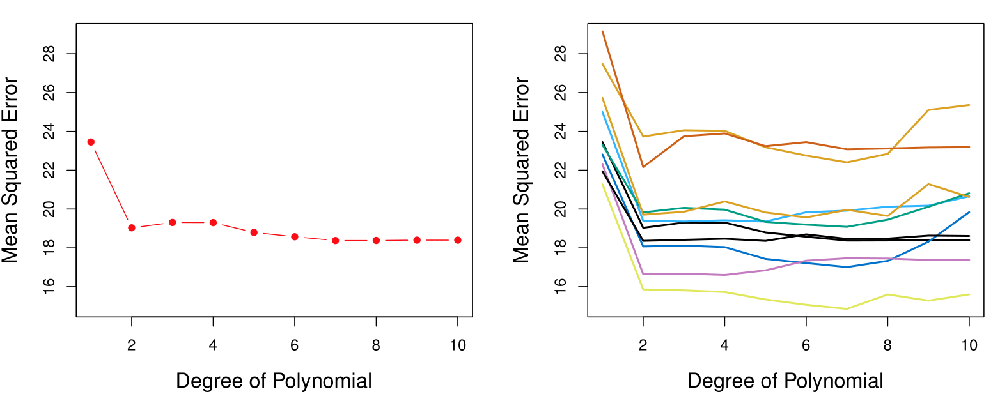
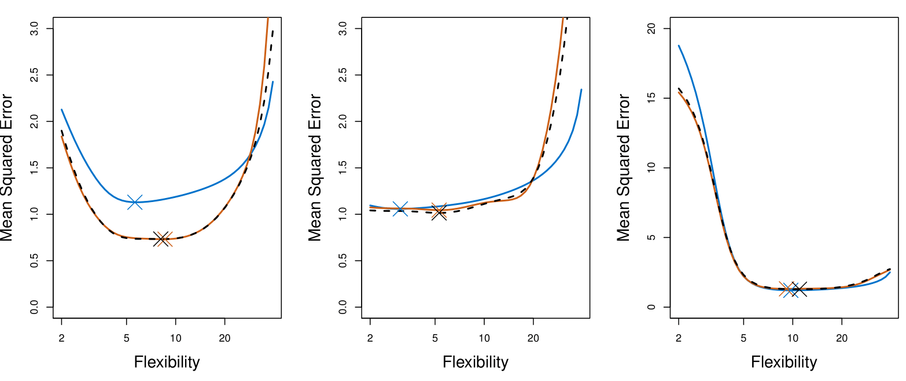
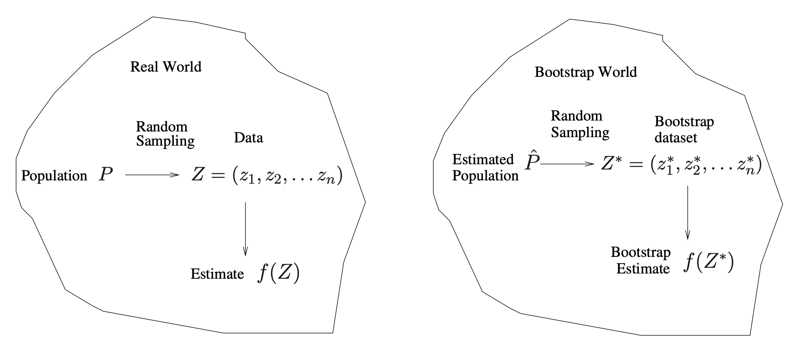

MGMT 47400: Predictive Analytics
Resampling Methods
Overview
- Motivation
- Training Error versus Test Error
- Validation-Set Approach
- Cross-Validation
- Cross-Validation for Classification Problems
- Bootstrap
- More on Bootstrap
- Can the Bootstrap Estimate Prediction Error?
This lecture content is inspired by and replicates the material from An Introduction to Statistical Learning.
Motivation
Prediction
- Goal: Build predictors and classifiers to make accurate predictions from data.
- Challenge: How do we evaluate our predictions?
Ideal Scenario: New Data
- The best way to test predictions is to use new, independent data from the population.
- Problem: New data isn’t always available.
Why Not Use Training Data?
- Using training data for evaluation is not reliable.
- Models tend to perform better on data they’ve already seen.
- This leads to overly optimistic results.
Solution: Resampling methods
Cross-validation and the Bootstrap are two resampling methods.
These methods allows us to evaluate the performance of our predictors using the available data without relying on additional samples.
They refit a model of interest to samples formed from the training set, in order to obtain additional information about the fitted model.
For example, they provide estimates of test-set prediction error, and the standard deviation and bias of our parameter estimates.
Training Error versus Test Error
Training Error versus Test Error
Recall the distinction between the test error and the training error:
The test error is the average error that results from using a statistical learning method to predict the response on a new observation, one that was not used in training the method.
The training error can be easily calculated by applying the statistical learning method to the observations used in its training.
But the training error rate often is quite different from the test error rate, and in particular, the former can dramatically underestimate the latter.
Training- versus Test-Set Performance
- Horizontal Axis: Represents model complexity (low to high).
- Low complexity: Simpler models with fewer parameters (e.g., fitting a straight line or using a few features).
- High complexity: More complex models with many parameters (e.g., higher-degree polynomials or many features).
- Vertical Axis: Represents prediction error.
- Lower values indicate better predictive performance.
- Training Error (Blue Curve):
- Starts high at low complexity because simple models underfit the training data.
- Decreases steadily as the model becomes more complex, fitting the training data better.
- Continues to decline even as the model becomes overly complex.
- Test Error (Red Curve):
- Starts high at low complexity due to underfitting (failure to generalize).
- Decreases as complexity increases and the model starts capturing relevant patterns.
- Reaches a minimum at the optimal complexity (sweet spot).
- Increases again at high complexity due to overfitting (model captures noise instead of general patterns).
Key Concepts
Bias-Variance Tradeoff:
- High Bias (Left Side): Simple models fail to capture the true structure of the data.
- High Variance (Right Side): Complex models become overly tailored to the training data and fail to generalize.
Optimal Complexity:
- Located where the test error is minimized.
- Balances bias and variance for the best generalization performance.
The Goal is to select a model complexity that minimizes test error to ensure good predictive performance on unseen data.
Precision and Accuracy

Precision: Refers to the consistency or reliability of the model’s predictions.
Accuracy: Refers to how close the model’s predictions are to the true values.
In the context of regression:
- High Precision, Low Accuracy: Predictions are consistent but biased.
- High Precision, High Accuracy: Predictions are both consistent and valid.
- Low Precision, Low Accuracy: Predictions are neither consistent nor valid.
- Low Precision, High Accuracy: Predictions are valid on average but have high variability.
More on Prediction-Error Estimates
- Best solution: test the model with a large test set.
- However, it is not very often available.
- In the absence of a large test set, some methods make a mathematical adjustment to the training error rate in order to estimate the test error rate.
- These include the Cp statistic, AIC, and BIC.
- In this lecture we consider a class of methods that estimate the test error by holding out a subset of the training observations from the fitting process, and then applying the statistical learning method to those held-out observations.
Validation-Set Approach
Validation-Set Approach
Here we randomly divide the available set of samples into two parts: a training set and a validation or hold-out set.
The model is fit on the training set, and the fitted model is used to predict the responses for the observations in the validation set.
The resulting validation-set error provides an estimate of the test error.
- This is typically assessed using the Mean Squared Error (MSE) in the case of a quantitative response and Misclassification Rate in the case of a qualitative (discrete) response.
The Validation Process
A random splitting of the original dataset into two halves (two-fold validation):
- Left part is the training set
- Right part is the validation set
Example: Automobile Data
Want to compare linear vs higher-order polynomial terms in a linear regression.
We randomly split the 392 observations into two sets:
- A training set containing 196 of the data points.
- A validation set containing the remaining 196 observations.

Left panel shows single split; right panel shows multiple splits.
Drawbacks of Validation Set Approach
The validation estimate of the test error can be highly variable, depending on precisely which observations are included in the training set and which observations are included in the validation set.
In the validation approach, only a subset of the observations — those that are included in the training set rather than in the validation set — are used to fit the model.
This suggests that the validation set error may tend to overestimate the test error for the model fit on the entire data set. Why?
- Having more data generally leads to lower error because it provides more information for training the model.
- For example, training on 200 observations is typically preferable to 100 observations, as larger datasets improve accuracy.
- However, when the training set is reduced (e.g., during validation), error estimates can be higher since smaller datasets may fail to capture all patterns in the data.
- This limitation highlights the drawbacks of simple validation.
- Cross-validation addresses this issue by efficiently using the data to produce more accurate and reliable error estimates.
Cross-Validation
K-Fold Cross-Validation
Widely used approach for estimating test error.
Estimates can be used to select the best model and to give an idea of the test error of the final chosen model.
The idea is to randomly divide the data into \(K\) equal-sized parts. We leave out part \(k\), fit the model to the other \(K-1\) parts (combined), and then obtain predictions for the left-out \(k\)-th part.
This is done in turn for each part \(k = 1, 2, \ldots, K\), and then the results are combined.
K-Fold Cross-Validation in Detail
Divide data into \(K\) roughly equal-sized parts (\(K = 5\) here).

K-Fold Cross-Validation in Detail
Divide data into \(K\) roughly equal-sized parts (\(K = 3\) here).

K-Fold Cross-Validation: in algebra
Let the \(K\) parts be \(C_1, C_2, \ldots, C_K\), where \(C_k\) denotes the indices of the observations in part \(k\). There are \(n_k\) observations in part \(k\): if \(N\) is a multiple of \(K\), then \(n_k = n / K\).
Compute the cross-validations error rate:
\[ \text{CV}_{(K)} = \sum_{k=1}^{K} \frac{n_k}{n} \text{MSE}_k \]
where \(\text{MSE}_k = \frac{\sum_{i \in C_k} (y_i - \hat{y}_i)^2}{n_k}\), and \(\hat{y}_i\) is the fit for observation \(i\), obtained from the data with part \(k\) removed.
- Special case: Setting \(K = n\) yields \(n\)-fold or leave-one-out cross-validation (LOOCV).
Leave-One-Out Cross-Validation (LOOCV)

A Nice Special Case!
With least-squares linear or polynomial regression, an amazing shortcut makes the cost of LOOCV the same as that of a single model fit! The following formula holds:
\[ \text{CV}_{(n)} = \frac{1}{n} \sum_{i=1}^{n} \left( \frac{y_i - \hat{y}_i}{1 - h_i} \right)^2, \]
where \(\hat{y}_i\) is the \(i\)-th fitted value from the original least-squares fit, and \(h_i\) is the leverage (diagonal of the “hat” matrix; see book for details). This is like the ordinary MSE, except the \(i\)-th residual is divided by \(1 - h_i\).
LOOCV is sometimes useful, but typically doesn’t shake up the data enough. The estimates from each fold are highly correlated, and hence their average can have high variance.
A better choice is \(K = 5\) or \(K = 10\).
Example: Auto Data Revisited
- Left plot: Similar to the two halve validation;
- Right plot: Tenfold cross validation. With 10 different partitions of the data to train and test the model we see there is not much variability. The results are consistent, in contrast to the result when we divided into two parts.
True and Estimated Test MSE for the Simulated Data

The plot presents the cross-validation estimates and true test error rates that result from applying smoothing splines to the simulated data sets illustrated in Figures 2.9–2.11 of Chapter 2 of the book.
The true test MSE is displayed in blue.
The black dashed and orange solid lines respectively show the estimated LOOCV and 10-fold CV estimates.
In all three plots, the two cross-validation estimates are very similar.
Right-hand panel: the true test MSE and the cross-validation curves are almost identical.
Center panel: the two sets of curves are similar at the lower degrees of flexibility, while the CV curves overestimate the test set MSE for higher degrees of flexibility.
Left-hand panel: the CV curves have the correct general shape, but they underestimate the true test MSE.
Potential Issues with Cross-Validation
Since each training set is only \(\frac{K - 1}{K}\) as big as the original training set, the estimates of prediction error will typically be biased upward. Why?
This bias is minimized when \(K = n\) (LOOCV), but this estimate has high variance, as noted earlier.
\(K = 5\) or \(10\) provides a good compromise for this bias-variance tradeoff.
Cross-Validation for Classification Problems
Cross-Validation for Classification Problems
We divide the data into \(K\) roughly equal-sized parts \(C_1, C_2, \ldots, C_K\). \(C_k\) denotes the indices of the observations in part \(k\). There are \(n_k\) observations in part \(k\): if \(n\) is a multiple of \(K\), then \(n_k = n / K\).
- Compute the cross-validation misclassification error:
\[ \text{CV}_K = \sum_{k=1}^{K} \frac{n_k}{n} \text{Err}_k \]
where \(\text{Err}_k = \frac{\sum_{i \in C_k} I(y_i \neq \hat{y}_i)}{n_k}\).
- The estimated standard deviation of \(\text{CV}_K\) is:
\[ \widehat{\text{SE}}(\text{CV}_K) = \sqrt{\frac{1}{K} \sum_{k=1}^{K} \frac{(\text{Err}_k - \overline{\text{Err}_k})^2}{K - 1}} \]
This is a useful estimate, but strictly speaking, not quite valid. Why not?
- We compute the standard errors assuming these were independent observations, but they are not strictly independent as they share some training samples. So there’s some correlation between them.
Cross-Validation: Right and Wrong
The Setting
High‐dimensional data: We have 50 samples (observations) but 5000 predictors (features). In many modern applications—such as genomics—it is typical to have many more predictors than observations.
Goal: Two‐class classification
Feature selection (Step 1): We first look at the correlation of each of the 5000 predictors with the class labels, and we pick the 100 “best” predictors—the ones that exhibit the largest correlation with the class labels.
Model fitting (Step 2): Once those top 100 are chosen, we fit a classifier (e.g., logistic regression) using only those top 100 predictors.
The question is how to estimate the true test error of this two‐step procedure.
The Tempting (but Wrong) Approach
A common mistake is to ignore Step 1 when doing cross‐validation and to apply cross‐validation only to Step 2. That is, one might simply take the already‐selected 100 features and then do, say, 10‐fold cross‐validation on the logistic regression.
Why people do this: It seems natural to say, “Now that we have our 100 features, let’s cross‐validate the classifier we fit with these 100 features.”
What goes wrong: By the time you pick those 100 “best” features, the data set has already “seen” all the labels in the process of ranking and filtering. This filtering step is actually part of training, because it used the outcome labels to choose features.
Skipping Step 1 in the cross‐validation will invariably produce an overly optimistic (often wildly optimistic) estimate of test error.
Why It Is Wrong: Data Leakage
Data leakage: The crucial point is that feature selection (filtering) depends on the relationship between each feature and the class labels. Hence, it is not “just a preprocessing step”—it is using the label information. Thus, Step 1 is part of the model‐building process.
Overfitting by cherry‐picking: With thousands of predictors, even if none is truly predictive, by sheer chance some predictors will appear correlated with the class labels in the sample. Selecting only the strongest correlations can give the illusion that the model has learned meaningful structure, when in fact it is just capturing random noise.
An extreme illustration: If you simulate data where the class labels are purely random (true error = 50%), but you pick the top 100 out of 5000 or 5 million random features, then do cross‐validation only after you have chosen those top 100, you can easily see cross‐validation estimates near 0% error—clearly a false, biased result.
The Correct (Right) Way to Apply Cross‐Validation
The key principle is that any step that uses the outcome labels must occur inside the cross‐validation loop. Concretely:
Split the data into training/validation folds (e.g., 10‐fold CV).
For each fold:
- Treat that fold as a hold‐out set.
- On the remaining training folds, perform the entire procedure:
- Feature selection (filtering to the top 100 based on correlation with the class labels in the training folds only).
- Fit the classifier (e.g., logistic regression) to those top 100 features in those training folds.
- Feature selection (filtering to the top 100 based on correlation with the class labels in the training folds only).
- Finally, evaluate the trained model on the hold‐out fold—with only the 100 features selected from the training folds.
- Treat that fold as a hold‐out set.
Repeat for each fold, then average the error rates (or other metrics).
By doing this, each hold‐out fold is kept separate from both feature selection and model training. This ensures that Step 1 (feature selection) is “relearned” anew in each training subset, just as Step 2 (the classifier) is. As a result, the cross‐validation error you compute properly reflects how the entire procedure—from filtering out thousands of features down to fitting the logistic model—would perform on truly unseen data.
Summary
Wrong: Select your 100 predictors once using all the data, then cross‐validate only the final classifier. This leads to overly optimistic, biased estimates of test error because it ignores that you used the labels in selecting those 100 predictors.
Right: Wrap the entire two‐step process (selection and model fitting) inside the cross‐validation loop. Each fold’s feature‐selection step must be done without knowledge of the hold‐out fold’s labels.
Following this correct approach is essential whenever one performs early filtering, variable selection, hyperparameter tuning, or any other step that uses the outcome labels. Such steps must be regarded as part of the training process and repeated inside each cross‐validation iteration.
Bootstrap
The Bootstrap
The bootstrap is a flexible and powerful statistical tool that can be used to quantify the uncertainty associated with a given estimator or statistical learning method.
For example, it can provide an estimate of the standard error of a coefficient, or a confidence interval for that coefficient.
Where Does the Name Come From?
The use of the term bootstrap derives from the phrase to pull oneself up by one’s bootstraps, widely thought to be based on one of the eighteenth-century The Surprising Adventures of Baron Munchausen by Rudolph Erich Raspe:
The Baron had fallen to the bottom of a deep lake. Just when it looked like all was lost, he thought to pick himself up by his own bootstraps.
It is not the same as the term bootstrap used in computer science, meaning to “boot” a computer from a set of core instructions, though the derivation is similar.
Example
Suppose that we wish to invest a fixed sum of money in two financial assets that yield returns of \(X\) and \(Y\), respectively, where \(X\) and \(Y\) are random quantities.
We will invest a fraction \(\alpha\) of our money in \(X\), and will invest the remaining \(1 - \alpha\) in \(Y\).
We wish to choose \(\alpha\) to minimize the total risk, or variance, of our investment. In other words, we want to minimize \(\text{Var}(\alpha X + (1 - \alpha) Y).\)
One can show that the value that minimizes the risk is given by:
\[ \alpha = \frac{\sigma_Y^2 - \sigma_{XY}}{\sigma_X^2 + \sigma_Y^2 - 2\sigma_{XY}}, \]
where \(\sigma_X^2 = \text{Var}(X)\), \(\sigma_Y^2 = \text{Var}(Y)\), and \(\sigma_{XY} = \text{Cov}(X, Y)\).
Example Continued
But the values of \(\sigma_X^2\), \(\sigma_Y^2\), and \(\sigma_{XY}\) are unknown.
We can compute estimates for these quantities, \(\hat{\sigma}_X^2\), \(\hat{\sigma}_Y^2\), and \(\hat{\sigma}_{XY}\), using a data set that contains measurements for \(X\) and \(Y\).
We can then estimate the value of \(\alpha\) that minimizes the variance of our investment using:
\[ \hat{\alpha} = \frac{\hat{\sigma}_Y^2 - \hat{\sigma}_{XY}}{\hat{\sigma}_X^2 + \hat{\sigma}_Y^2 - 2\hat{\sigma}_{XY}}. \]
Example Continued
Each panel displays 100 simulated returns for investments X and Y. From left to right and top to bottom, the resulting estimates for \(\alpha\), the fraction to minimize the total risk, are 0.576, 0.532, 0.657, and 0.651.
Example Continued
To estimate the standard deviation of \(\hat{\alpha}\), we repeated the process of simulating 100 paired observations of \(X\) and \(Y\), and estimating \(\alpha\) 1,000 times.
We thereby obtained 1,000 estimates for \(\alpha\), which we can call \(\hat{\alpha}_1, \hat{\alpha}_2, \ldots, \hat{\alpha}_{1000}\).
The left-hand panel of the Figure displays a histogram of the resulting estimates.
For these simulations, the parameters were set to \(\sigma_X^2 = 1, \, \sigma_Y^2 = 1.25, \, \sigma_{XY} = 0.5,\) and so we know that the true value of \(\alpha\) is 0.6 (indicated by the red line).
Example Continued
The mean over all 1,000 estimates for \(\alpha\) is:
\[ \bar{\alpha} = \frac{1}{1000} \sum_{r=1}^{1000} \hat{\alpha}_r = 0.5996, \]
very close to \(\alpha = 0.6\), and the standard deviation of the estimates is:
\[ \sqrt{\frac{1}{1000 - 1} \sum_{r=1}^{1000} (\hat{\alpha}_r - \bar{\alpha})^2} = 0.083. \]
This gives us a very good idea of the accuracy of \(\hat{\alpha}\): \(\text{SE}(\hat{\alpha}) \approx 0.083\).
So roughly speaking, for a random sample from the population, we would expect \(\hat{\alpha}\) to differ from \(\alpha\) by approximately 0.08, on average.
Example Results
Left: A histogram of the estimates of \(\alpha\) obtained by generating 1,000 simulated data sets from the true population.
Center: A histogram of the estimates of \(\alpha\) obtained from 1,000 bootstrap samples from a single data set.
Right: The estimates of \(\alpha\) displayed in the left and center panels are shown as boxplots.
- In each panel, the pink line indicates the true value of \(\alpha\).
Now Back to the Real World
The procedure outlined above cannot be applied, because for real data we cannot generate new samples from the original population.
However, the bootstrap approach allows us to use a computer to mimic the process of obtaining new data sets, so that we can estimate the variability of our estimate without generating additional samples.
Rather than repeatedly obtaining independent data sets from the population, we instead obtain distinct data sets by repeatedly sampling observations from the original data set with replacement.
Each of these “bootstrap data sets” is created by sampling with replacement, and is the same size as our original dataset. As a result, some observations may appear more than once in a given bootstrap data set and some not at all.
Example with Just 3 Observations
- A graphical illustration of the bootstrap approach on a small sample containing \(n = 3\) observations.
- Each bootstrap data set contains \(n\) observations, sampled with replacement from the original data set.
- Each bootstrap data set is used to obtain an estimate of \(\alpha\).
Bootstrap Standard Error
Denoting the first bootstrap data set by \(Z^{*1}\), we use \(Z^{*1}\) to produce a new bootstrap estimate for \(\alpha\), which we call \(\hat{\alpha}^{*1}\).
This procedure is repeated \(B\) times for some large value of \(B\) (say 100 or 1000), in order to produce \(B\) different bootstrap data sets, \(Z^{*1}, Z^{*2}, \ldots, Z^{*B}\), and \(B\) corresponding \(\alpha\) estimates, \(\hat{\alpha}^{*1}, \hat{\alpha}^{*2}, \ldots, \hat{\alpha}^{*B}\).
We estimate the standard error of these bootstrap estimates using the formula:
\[ SE_B(\hat{\alpha}) = \sqrt{\frac{1}{B - 1} \sum_{r=1}^B (\hat{\alpha}^{*r} - \bar{\alpha}^{*})^2}. \]
This serves as an estimate of the standard error of \(\hat{\alpha}\) estimated from the original data set. See center and right panels of Figure on slide 29. Bootstrap results are in blue.
For this example \(SE_B(\hat{\alpha}) = 0.087\).
More on Bootstrap
A General Picture for the Bootstrap

Real World
- Population \(P\)
- We imagine there is a true, unknown population (or data‐generating process).
- In practice, we typically do not have direct access to all of \(P\).
- We imagine there is a true, unknown population (or data‐generating process).
- Random Sampling
- We draw a finite sample \(Z = (z_1, z_2, \dots, z_n)\) from the population \(P\).
- This sample \(Z\) is our observed dataset (often called the “training data” in applied work).
- We draw a finite sample \(Z = (z_1, z_2, \dots, z_n)\) from the population \(P\).
- Estimate \(f(Z)\)
- From this observed data \(Z\), we compute a statistic or estimate, denoted \(f(Z)\).
- Examples might include a mean, a regression coefficient, or (in the investment example) an optimal allocation parameter \(\alpha\).
- From this observed data \(Z\), we compute a statistic or estimate, denoted \(f(Z)\).
In short, the Real World side shows how our single dataset \(Z\) arrives by randomly sampling from the true population \(P\).
Bootstrap World
- Estimated Population \(\hat{P}\)
- Because we usually cannot sample repeatedly from the real population \(P\), the bootstrap creates a stand‐in population \(\hat{P}\). We ‘replace’ the population by our sample.
- \(\hat{P}\) is the empirical distribution function of the observed data \(Z\). Informally, it assigns probability \(\tfrac{1}{n}\) to each observed point in \(Z\).
- Random Sampling from \(\hat{P}\)
- To mimic drawing new data from the real population, we instead draw (with replacement) from \(\hat{P}\).
- This produces a bootstrap dataset \(Z^* = (z_1^*, z_2^*, \dots, z_n^*)\). Each \(z_i^*\) is sampled (with replacement) from among the original observed points \(\{z_1, \dots, z_n\}\).
- To mimic drawing new data from the real population, we instead draw (with replacement) from \(\hat{P}\).
- Bootstrap Estimate \(f(Z^*)\)
- We compute the same statistic (or estimator) on each bootstrap sample, giving \(f(Z^*)\).
- By repeating this bootstrap sampling many times, we obtain a distribution of estimates \(\{f(Z^*_1), f(Z^*_2), \dots\}\). This approximates how \(f(Z)\) would vary if we could repeatedly resample from the true population.
- We compute the same statistic (or estimator) on each bootstrap sample, giving \(f(Z^*)\).
The Bootstrap in General
In more complex data situations, figuring out the appropriate way to generate bootstrap samples can require some thought.
For example, if the data is a time series, we can’t simply sample the observations with replacement (why not?).
- The main reason we typically cannot simply resample individual points with replacement in a time series is that time‐ordered data exhibits serial dependence. That is, adjacent observations (e.g., today’s stock price and yesterday’s stock price) are correlated in ways that we lose if we treat all observations as independent units and shuffle them arbitrarily.
- A simple i.i.d. bootstrap would ignore the natural ordering of the data points (and the correlations it encodes), thereby violating a crucial assumption about the structure of time‐series data.
We can instead create blocks of consecutive observations and sample those with replacements. Then we paste together sampled blocks to obtain a bootstrap dataset.
Other Uses of the Bootstrap
Primarily used to obtain standard errors of an estimate.
Also provides approximate confidence intervals for a population parameter. For example, looking at the histogram in the middle panel of the figure on slide 29, the 5% and 95% quantiles of the 1,000 values is (0.43, 0.72).
This represents an approximate 90% confidence interval for the true α. How do we interpret this confidence interval?
The above interval is called a Bootstrap Percentile confidence interval. It is the simplest method (among many approaches) for obtaining a confidence interval from the bootstrap.
Can the Bootstrap Estimate Prediction Error?
Can the Bootstrap Estimate Prediction Error?
In cross-validation, each of the \(K\) validation folds is distinct from the other \(K-1\) folds used for training: there is no overlap. This is crucial for its success. Why?
- There is a clear separation, no overlap, between the train and the test sets.
To estimate prediction error using the bootstrap, we could think about using each bootstrap dataset as our training sample, and the original sample as our validation sample.
But each bootstrap sample has significant overlap with the original data. About two-thirds of the original data points appear in each bootstrap sample.
This will cause the bootstrap to seriously underestimate the true prediction error.
The other way around— with the original sample as the training sample, and the bootstrap dataset as the validation sample— is worse!
Removing the Overlap
Can partly fix this problem by only using predictions for those observations that did not (by chance) occur in the current bootstrap sample.
But the method gets complicated, and in the end, cross-validation provides a simpler, more attractive approach for estimating prediction error.
Summary
Summary
Resampling Methods
- Cross-validation and Bootstrap allow evaluation of model performance using existing data.
- They provide estimates of:
- Test-set prediction error
- Standard deviation and bias of parameter estimates.
Training vs Test Error
- Training error decreases with model complexity.
- Test error decreases, then increases due to bias-variance tradeoff:
- High Bias: Simple models underfit the data.
- High Variance: Complex models overfit the training data.
- Optimal complexity minimizes test error.
Validation-Set Approach
- Divides data into training and validation sets.
- Validation error provides an estimate of test error but:
- Can vary based on data split.
- May overestimate test error due to smaller training sets.
Cross-Validation
- K-Fold Cross-Validation:
- Divides data into \(K\) folds for iterative training and testing.
- Balances bias and variance (e.g., \(K = 5\) or \(10\)).
- Leave-One-Out Cross-Validation (LOOCV):
- Uses one data point as validation in each iteration.
- Low bias but high variance.
Bootstrap
- Estimates variability and uncertainty of parameter estimates.
- Generates multiple samples with replacement from the dataset.
- Provides approximate confidence intervals and standard errors.